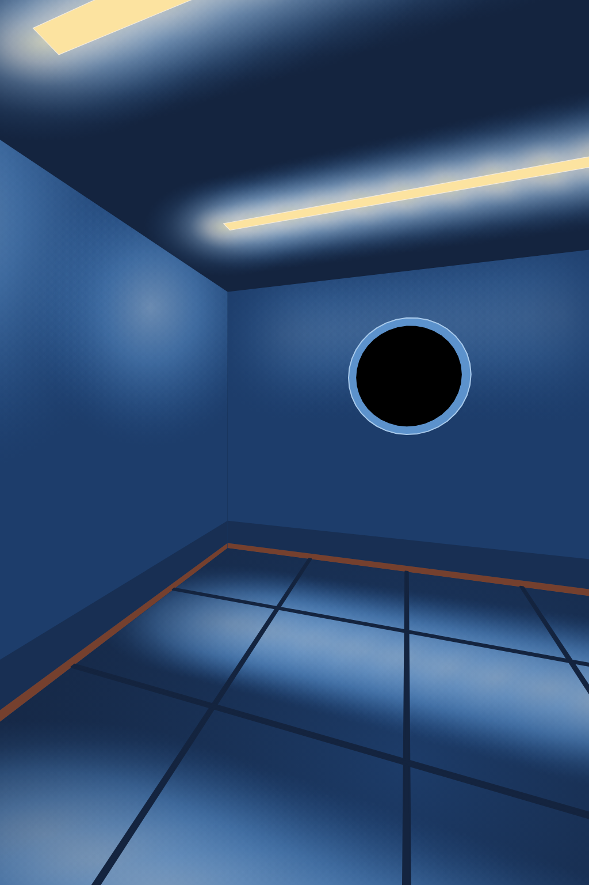
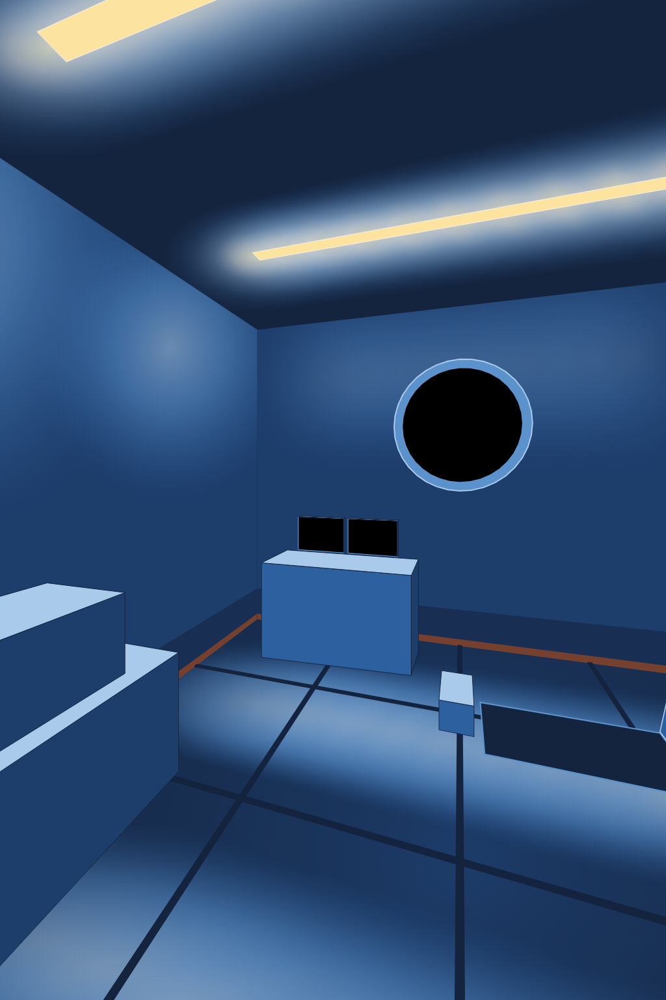
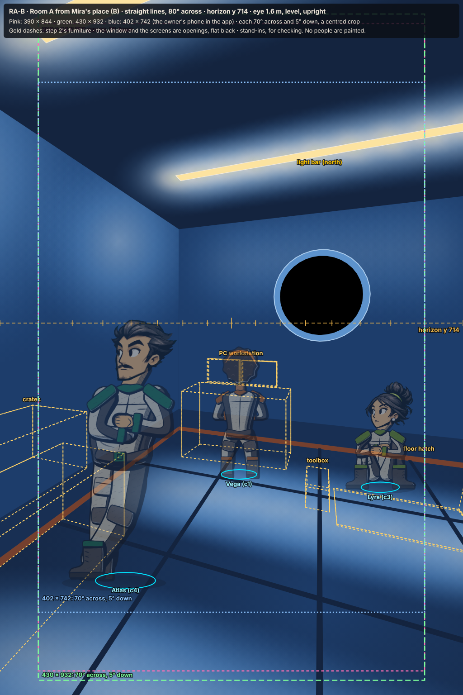
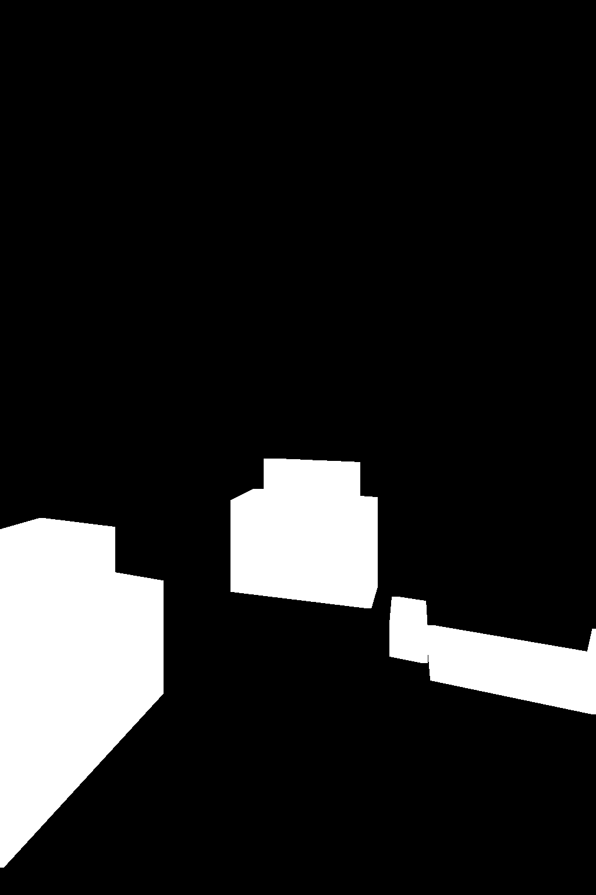
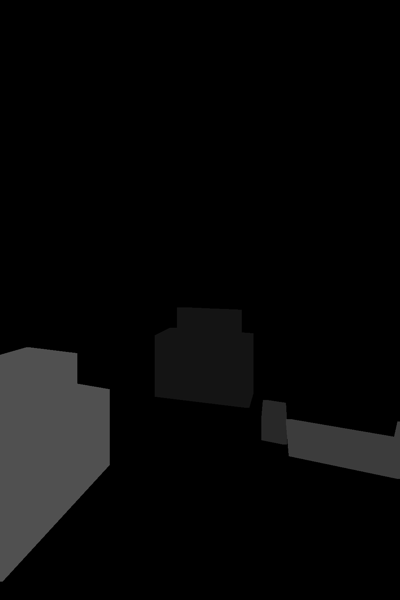

Sheet RA-B · Room A, view B
Version 3 · for the Lead’s review · RA-B-3c, before any liftRoom A’s second view, from Mira’s place by the south wall, painted the way view A was: two pictures, the empty room and then its furniture. The food capsule and Echo’s cabinet are out of this view, so there is no third step. No people are painted, because code draws them. Every picture made from this sheet is AI-generated and recorded as such. The only inputs are the code-drawn guides and masks on this page, and the picture its own step 1 keeps.
compositeB3.py), its record (composite-B3.json), view B’s screens for the live monitors (screens-B.json) and nine review pictures. Below.Version 2’s changes
- The desk stands on the painted deck. Its floor corners are drawn on RA-B-2’s painted deck, +15.7, +7.8, +16.1, +24.1 px down; the tabletop and the monitors stay where the camera puts them, so the desk covers the kick strip behind it. Only the desk’s area changes, in the mask and the guide: no warp. Below.
- The 15 px rule, against RA-B-2’s painted features. Passed: 13 features near the mask; 3 pass outright and 10 on 11 named exceptions, for the Lead’s decision, each where the desk, its monitors or the crates stand in front of a feature. Below.
- Vega’s foot line. 4.2 px off the painted deck (the nearest seam crossing -4.7, 1.5 px): under the Lead’s 8 px, so it stays. Below.
- Added to step 2’s PLACE block, after “two closed steel crates, a long low one with a smaller one on top, held by straps.”: “The upper crate’s top face stays clear: nothing lies or stands on it, because code adds the parcel Atlas lifts.”
- The tool. rb1_tools.py version 2: its s1 command prints rb1_tools.py in its colour check (version 1 printed ra1_tools.py).
- Files. New bytes:
img/ra-B-empty-annotated.png,img/ra-B-guide.png,img/ra-B-regions.png,img/ra-B-place.png,img/ra-B-split.png;img/ra-B-empty.pngandimg/ra-B-empty-regions.png(step 1’s) are version 1.1’s, byte for byte. Step 1’s prompt is version 1.1’s, byte for byte, as RA-B-2 was made with it; step 2’s is version 1.1’s with the crate-top line alone (the build checks both): step 291243beabcfb…→f5c37642fcbd….
Version 1.1’s changes
- Added to the colour block (steps 1 and 2), after “no green, purple or red light.”: “Each indicator is a single small dot, never several in a row or a column.”
- Added to the view block (step 1), after “on the left, the west wall.”: “The north wall is seen at a slant, not square on: its foot and the deck seams along it run down from the far corner to the right edge, as the guide shows.”
- The guide. The deck seams in the guides are drawn at full strength with a 3 px stroke of the same deep navy (version 1: the seam alone, at 0.9 opacity). The plates are the same 1 m plates. The before and after are under the picture.
- Files. New bytes:
img/ra-B-empty.png,img/ra-B-empty-annotated.png,img/ra-B-guide.png; the other 4 pictures are version 1’s, byte for byte. The manifest and the prompts are new. Each prompt is version 1’s with only these sentences added (the build checks it): step 1a29c10e22b0e…→fc22f7ccdfe9…, step 28f2a00d3d7f3…→91243beabcfb….
- Every piece whole. View A’s step 2 left the cabinet’s right side open, fading into the wall at the mask’s edge, and two masked fixes could not close it, so its frame was drawn in code. Step 2’s prompt here asks for each piece whole, its outline and frame closed on every side, and nothing fading into the wall or the deck at an area’s edge.
- The 15 px rule. View A’s step-1 picture painted wall features that step 2’s mask then had to clear. Here RA-B-2’s painted features are traced and step 2’s mask is checked against them (every edge covers a feature by 15 px or clears it by 15 px): it passes, with named exceptions where the furniture stands in front of a feature (below).
- Openings. The round window and the two monitors’ screens are painted flat black and empty, for the game to fill; the colour check holds them to it. The mask stays 48 px clear of the window’s frame as the guide draws it.
- The lid. The hatch’s lid stands at the painting’s right edge, a sliver about 9 px wide (x 1015 to 1024), outside every phone’s slice (they end at x 939) and too small to lift as a layer of its own, so in view B it is part of the hatch’s piece.
Step 2 · RA-B-3, completed in code: RA-B-3c
RA-B-3 (sha256 95c742f2e47b4ea3…) is the image tool’s keep: RA-B-3’s raw edit over RA-B-2 inside step 2’s mask, feathered by a 2 px Gaussian. Rebuilt here from those two pictures, it matches pixel for pixel. Where a piece ran past the mask, the keep cut it. Each cut piece’s outline was traced on the raw edit along the outer edge of its ink line, and closes at least 6 px inside the mask, where RA-B-3 already equals the raw (the keep’s blend reaches 5 px in). Inside the outline RA-B-3c takes the raw’s pixels; the alpha falls from 1 to 0 over the 1 px outside it; nothing else comes from the raw. Where a completed piece covers a pipe or panel of RA-B-2’s wall, that is the occlusion the Lead asked for.
The three the Lead named, each completed along its outline wherever it runs past the mask: the desk’s left end, from the tabletop’s left end and back corner down the pedestal to its foot on the deck; the left monitor’s left frame, with its top bezel, which the same cut runs along (the left frame alone would leave a step in the bezel at x 453); and the toolbox’s left side and handle, with its bottom edge as far as the lid’s foot (the deck seen through the handle stays RA-B-2’s). Two more with the same cut, done the same way and recorded apart so either can be dropped: the right monitor’s top bezel and right frame, and the corner of the desk’s right foot. Left as they are: the lid’s foot at the toolbox’s right (the Lead: leave it); the shadow under the drawers, x 365-396, y 1004-1015 (a shadow on the deck, not a piece: nothing else is taken from the raw); the brace at the desk’s right end, x 650-670, y 980-1003 (wholly outside the mask, so absent from RA-B-3 rather than cut).
| Piece | Changed px | Outside the mask | Inside it (the keep’s blend) | Where |
|---|---|---|---|---|
| The desk’s left end: the tabletop’s left end and back corner, the pedestal and its foot on the deck | 8,101 | 7,350 | 751 | x 340–424, y 849–1015 |
| The left monitor: its left frame and its top bezel | 4,809 | 4,251 | 558 | x 405–512, y 771–840 |
| The toolbox: its left side, its handle and its bottom edge | 8,970 | 8,434 | 536 | x 590–690, y 1026–1160 |
| The right monitor: its top bezel and right frame one more | 3,310 | 2,598 | 712 | x 516–626, y 771–841 |
| The desk’s right foot: its right side and corner one more | 214 | 89 | 125 | x 638–650, y 999–1028 |
The pictures below show RA-B-3 and RA-B-3c, both AI-generated (RA-B-3c a code composite of AI-generated pictures); each is labelled in itself and in its caption, and none is an input, an asset or a commit.


The screens, for the live monitors
Fitted to RA-B-3c’s painted flat black: along each side, the edge where the OKLCH lightness crosses 0.12, scanned every 2 px; a straight line through each side’s points; the corners where the lines meet. Each region passes the colour check’s flat-black gate (95% of it under lightness 0.12). The painted screens are not where step 2’s map draws them: both are larger than the map’s and sit higher and further left. In RA-B-3 the right monitor’s top was cut at the mask’s edge (y 788 to 793), which made its black read smaller; completed, it is the larger of the two. The corners, in painting pixels (a pixel spans i to i + 1), are in screens-B.json, for the live monitors.
| Screen | Corners: top-left, top-right, bottom-right, bottom-left | Size | Px | p95 | Gate | The map’s |
|---|---|---|---|---|---|---|
| Left screen | (413.8, 778.4) (502.8, 778.6) (502.4, 832.4) (412.4, 831.3) | 90.4 × 54 | 4,782 | 0.085 | pass | x 459–529, y 794–849 |
| Right screen | (523.9, 779.1) (617.8, 779.2) (616.1, 831.4) (521.9, 830.9) | 95.9 × 52.3 | 4,892 | 0.098 | pass | x 535–611, y 797–855 |

The whole picture, the 402 × 742 view and the check


python3 -I compositeB3.py <records folder> # reads img/RA-B-3.png, img/RA-B-3-raw.png and img/RA-B-2.png there, each by its sha256 # writes ra-B-3c.png (the plate), composite-B3.json and screens-B.json, and stops if a check fails
| File | Bytes | sha256 |
|---|---|---|
compositeB3.pythe composite in code: the traced outlines, the 1 px feather, the checks and the screens’ fit | 19,359 | b66d026eb0ab0ef5d7c9280050aca8f102ecc8ba6f1697f41bbdef2c393e114f |
composite-B3.jsonits record: the sources and their sha256, the outlines, each piece’s changed pixels, the checks and the plate’s pixel sha256 | 10,380 | c3c13bdbb3b0414a9e0fded4dfc9fb8f53bacdd286676b66f250b935802d1fb8 |
screens-B.jsonview B’s two screens, fitted to the painted flat black, for the live monitors | 3,767 | 62f23844df6ec6d86a1061d9dae63f4a9daa98ab1ca12262768fd93a09147e44 |
The plate, ra-B-3c.png, is not published here, being an AI-generated picture without a label of its own: the command above makes it from the image session’s records. Its pixels’ sha256 is f387d99ddbdbbb54ae4618306779be98dcc258426f0b6b715f0e1d85af516344.
The picture
As view A’s: 1024 × 1536, straight lines, 80° across (focal 610.2 px), level, the horizon 714 px from the top. The camera is at Mira’s place by the south wall’s middle, at eye height (1.6 m), facing 342.3°, a little west of north. The north wall is the back wall, with the round window right of the middle; the west wall is on the left. In view: Vega (PC workstation, seen from Vega's right, back view); Atlas (crates, seen from Atlas's right, approved face); Lyra (floor hatch, seen from Lyra's left, approved face). Echo is out of view.



The guide’s deck seams, version 1 and 1.1
The same 744 × 440 px crop of step 1’s guide, at 1:1, where the north wall meets the deck: the far corner on the left, the wall’s foot running down to the right edge. Version 1.1 changes the seams alone.


What each phone shows


Step 1 · done: RA-B-2
RA-B-2 (sha256 aefddadcb3ce554c…) was made on version 1.1 and accepted by the Lead on 27 November. It is an AI-generated picture; its record, with its tool, prompt, date and settings, is in the image session’s records. The four pictures in this version that show it, with this sheet’s masks and measurements drawn over it, are for review only: each is labelled as AI-generated in itself and in its caption, and none is an input, an asset or a commit.

The desk on the painted deck
RA-B-2 paints the north wall’s foot lower than the guide does across the desk’s span: +26 at x 400, +24 at x 440, +23 at x 480, +21 at x 520, +19 at x 560, +18 at x 600, +16 at x 640, +15 at x 680 px, read on the foot of its kick strip (64 readings, a straight line within 1.17 px). Its far deck seam, 1 m out, lies within 4 px of the guide’s there. So each of the desk’s floor corners keeps its place between the wall’s foot and that seam, as the guide’s camera puts it, and is drawn at the same place between the painted ones. The tabletop and the monitors stay where the camera puts them: the desk’s legs grow, it stands on the painted deck, and it covers the kick strip behind it. Nothing else in the guide moves.
| Desk floor corner | Guide y | Painted y | Down, px |
|---|---|---|---|
| front, 0.55 m out, x 402 | 994.0 | 1009.7 | +15.7 |
| front, 0.55 m out, x 632 | 1029.8 | 1037.7 | +7.8 |
| back, at the north wall, x 643 | 984.1 | 1000.2 | +16.1 |
| back, at the north wall, x 442 | 957.4 | 981.5 | +24.1 |

The 15 px rule on RA-B-2
Every edge of step 2’s mask either covers a painted feature with 15 px to spare or clears it by 15 px. RA-B-2’s features near the mask were traced at three or four times on a 10 px grid (featuresB.json), and the test is view A’s own code (feat15.py). 3 of the 13 pass outright. The other 10 pass on 11 named exceptions, each a zone where the desk, its monitors or the crates stand in front of the feature, so their outline must cross it or run along it: these are for the Lead’s decision. The 3 indicator dots are at least 60 px from the mask. Near the toolbox and the hatch only structural lines lie close (the kick strip and the deck seams), which the rule leaves out, as in view A.
| Feature | Against the mask | Px within 15 | Named exception |
|---|---|---|---|
| lower pipe run | crosses | 1,944 | behind the two monitors. Vega’s monitors stand in front of the pipe: their outer sides cross it (x 452 and 619) and their tops run 9 to 14 px above it, so the monitors’ outline must cross it and run along it. |
| pipe elbow and upper pipe, left | clear by 16 px | 0 | passes outright |
| vertical pipe behind the desk’s left end | crosses | 4,260 | behind the desk’s left end. The pipe runs down behind the desk’s left end: the desk’s outline (x 402, the mask’s edge x 396) crosses it along its length, and its top meets the tabletop’s back-left corner. |
| pipe bend, upper left | crosses | 576 | at the left monitor’s top-left corner. The bend ends behind the left monitor’s top-left corner: the monitor’s outline (its top at y 793, the mask’s edge y 787) runs along it. |
| clamp bracket on the lower run | crosses | 526 | behind the left monitor’s top. The bracket stands up behind the left monitor’s top edge, which crosses it. |
| junction box on the lower run | crosses | 1,100 | behind the right monitor’s top. The box sits behind the right monitor’s top edge (y 797, the mask’s edge y 791), which crosses it. |
| vented panel behind the desk | crosses | 5,400 | behind the tabletop’s back edge, left. The tabletop’s back edge and the left monitor’s lower left side run along the panel’s top edge, and the desk’s left end crosses its top-left corner. behind the desk’s right end. The desk’s right end crosses the panel (its outline at x 643, the mask’s edge x 649), leaving the panel’s right 20 px showing; the right monitor’s lower right side and the tabletop’s right corner run along its top edge. |
| left-wall pipe, outer | crosses | 1,905 | behind the crates’ top. Atlas’s crates stand in front of the pipe: the upper crate’s top edge crosses it, and its clamp ring at y 909-928 lies just under that edge. |
| left-wall pipe, inner | crosses | 1,719 | behind the crates’ top. The upper crate’s top edge crosses the pipe at its clamp ring. |
| pipe elbow and low run, left wall | inside by 25 px | 0 | passes outright |
| locker with its vent, left wall | crosses | 3,518 | behind the crates’ top right corner. The upper crate’s top edge and right side cross the locker’s lower part; its vent sits 6 px beyond the crates’ mask. |
| thin pipe run right of the crates | crosses | 2,719 | behind the crates’ right side and the lower crate’s top. The pipe passes behind the upper crate’s right side and just above the lower crate’s top, whose outline runs along it. |
| bracket on the thin conduits | clear by 45 px | 0 | passes outright |


Vega’s foot line
Vega’s feet stand 0.875 m out from the north wall, between its foot and the far seam. Kept at its place between the painted lines (0.836 of the way), Vega’s anchor sits 4.2 px below the guide’s (about 1.9 px on the 390 phone); the nearest seam crossing, 1 m out and 1 m west of the middle, is -4.7, 1.5 px off the guide’s. Both are under the Lead’s 8 px, so Vega’s foot line stays where the plan puts it.
The two steps
The image session names each picture RA-B-1, RA-B-2 and so on in the order it makes them. Step 1 is done: RA-B-2, made on version 1.1 and accepted (RA-B-1 and RA-B-1b, made on version 1, came first). Step 2 makes RA-B-3. The Lead gives each step’s go, naming this sheet’s version and hashes, and accepts each picture before the next step starts. All commands run from the sheet’s folder with NumPy and Pillow, and the tool stops if any file is not the sheet’s.
Step 1 · the empty room · done
RA-B-2, from the prompt below (version 1.1’s, unchanged in version 2), accepted by the Lead on 27 November.
- Input
img/ra-B-empty.png, with no mask and no second picture- Size
- 1024 × 1536, one picture
- Check
- The colour check with the empty room’s map (the window held flat black), and the lines against the annotated guide: the horizon at 714, every vertical upright, the corner and floor seams where the guide puts them, the window round and where the guide has it
Step 1: the prompt, 4,751 characters · sha256 fc22f7ccdfe9b1b2…
Create an illustrated science-fiction world with convincing three-dimensional depth and a hand-inked graphic-novel finish. Use strong silhouettes, expressive outlines, textured shadows and worn materials. Build environments from layered machinery, exposed pipes, suspended cables, overlapping panels and objects that suggest everyday use and repair. Organize dense detail around clear focal points. Use controlled colour palettes with warm luminous accents against cool shadow, giving each location its own atmosphere. The world should feel active, inhabited and larger than the visible frame, with layered depth, while the composition stays clear. Overall: lived-in, cyber, illustrated science fiction, lit and readable: warm lamplight against cool blue-steel shadow, dark only in the corners. This is a still picture and code adds the motion, so paint everything crisply: no motion blur, no lens blur, no film grain. Room A, the crew bay, in the same illustrated world: blue steel, lit warm. The whole room is one blue-steel family, the colours of the attached guide: deep navy in the shadows and corners (#14243F, #1D3D6B), steel blue on the walls and the deck (#2D609E), turning paler where the light falls (#5C92CC, #A9CAEB). The light is warm: the two light bars glow cream along their length (#FCE3A0), with a warm paper-white glow (#F4EBDD) on the ceiling around them and soft pools of pale light on the deck below. Walls, panels, pipes, cables and deck plates take their colour from that family; worn edges, rivets and plate seams show a little rust (#75402E); nothing is neutral grey, and nothing is tan, beige, olive, purple or violet. The shadows are deep navy, never black-brown or grey. Labels and paper are blank, in a warm paper white (#F4EBDD). Small indicator lights are warm orange (#EC793C); no other coloured light, and no green, purple or red light. Each indicator is a single small dot, never several in a row or a column. Practical and worn, a working bay, quiet but lived in. The guide is the room's colour plan: paint over it in full detail and texture, but keep its colours and where its light falls. The room: Room A, the crew bay, a 4 m square room with a 3 m ceiling, here with no furniture in it. The ceiling is solid steel panels, with no skylight and no opening in it: two long light bars set into it run across the room about 1.4 m apart, each glowing warm cream along its whole length behind a plain diffuser, lighting the ceiling around it and throwing soft pools of light on the deck below. In the middle of the north wall, about 1.95 m above the deck, a round window about 1 m across sits in a heavy steel frame; its glass is flat black and empty, with nothing seen through it. The walls are steel panels, pipes, conduits, cable runs and small lockers, worn and repaired, darker toward the deck, with a narrow rust-brown kick strip along their foot; the deck is metal plates with seams, scuffs and a little rust, lit pale under the light bars and darker toward the corners. No beams, rays or shafts of light in the air. View: a straight-lined view at standing eye height, exactly as the attached guide shows: 80 degrees across and level, every vertical line perfectly straight and upright, every straight line in the room straight in the picture. The horizon, at eye level, is a straight line 714 px from the top, a little above the middle. Match the guide's layout, perspective, horizon and proportions exactly, line for line, as its floor seams, wall bases, corners and ceiling edges show. Do not curve the lines, tilt the view, zoom in or out, or move the horizon. This picture: from a place by the south wall, at its middle, at standing eye height, looking across the room toward the north wall. Ahead, the north wall, from its corner with the west wall a little left of the middle out to the right edge, with the round window right of the middle; on the left, the west wall. The north wall is seen at a slant, not square on: its foot and the deck seams along it run down from the far corner to the right edge, as the guide shows. Above, the solid ceiling, with the two light bars running across it from left to right, the nearer one high at the top of the picture and the farther one lower, nearer the far wall. The deck is open and clear, with nothing standing on it, while the walls keep their pipes, panels and conduits. No people, and no words, letters or logos. Leave screens plain for the game to fill: openings marked black in the guide stay flat black and empty. No figures, faces, hands, silhouettes or animals; no signs, symbols or readable screens (any label is blank or abstract marks); no buttons or panels that look like game controls; no emblems, insignia, signature, watermark or border.
sha256 fc22f7ccdfe9b1b23bbb1e931764bc53f50450e0302a7d96ce9f30e38d2e4df0, of the text in UTF-8, as room-a-ra-b-prompts.txt gives it.
Step 2 · the furniture
One masked PLACE edit of RA-B-2.png (sha256 aefddadcb3ce554c…) inside the furniture’s outlines grown 6 px (13.4% of the picture, in 3 areas), the desk drawn on RA-B-2’s painted deck. The input shows the guide there. The kept edit is lifted into one layer a piece, for the people’s depth. The 15 px rule: passed against RA-B-2’s painted features, with 11 named exceptions for the Lead’s decision (below).


| Piece | Grey | Outline px | Lifted in the dry run | What it is |
|---|---|---|---|---|
| crates | 80 | 110,691 | 78,215 | Atlas's two crates against the west wall, nearest the camera and cut by the left edge. |
| PC workstation | 20 | 49,345 | 50,172 | Vega's desk against the north wall, left of the round window, with its two monitors. Their screens are openings: painted flat black, for the game to fill. Vega's chair is drawn with Vega, so none is painted. |
| toolbox | 40 | 4,847 | 5,069 | The closed toolbox at the hatch's left end. |
| floor hatch | 60 | 24,818 | 24,187 | Lyra's open hatch in the deck, its near rim crisp and lit. Its lid stands at the painting's right edge, outside every phone's slice, so it is part of the hatch's piece here. |
python3 -I rb1_tools.py s2 B RA-B-2.png RA-B-3 # the image tool edits RA-B-3-S2-input.png with RA-B-3-S2-mask.png (alpha 0 = repaint) and the step-2 prompt python3 -I rb1_tools.py keep B RA-B-2.png RA-B-3-raw.png RA-B-3.png python3 -I rb1_tools.py lift B RA-B-2.png RA-B-3.png RA-B-3 python3 -I rb1_tools.py colours B 2 RA-B-3.png RA-B-3
Step 2: the prompt, 3,897 characters · sha256 f5c37642fcbd4e55…
Create an illustrated science-fiction world with convincing three-dimensional depth and a hand-inked graphic-novel finish. Use strong silhouettes, expressive outlines, textured shadows and worn materials. Build environments from layered machinery, exposed pipes, suspended cables, overlapping panels and objects that suggest everyday use and repair. Organize dense detail around clear focal points. Use controlled colour palettes with warm luminous accents against cool shadow, giving each location its own atmosphere. The world should feel active, inhabited and larger than the visible frame, with layered depth, while the composition stays clear. Overall: lived-in, cyber, illustrated science fiction, lit and readable: warm lamplight against cool blue-steel shadow, dark only in the corners. This is a still picture and code adds the motion, so paint everything crisply: no motion blur, no lens blur, no film grain. Room A, the crew bay, in the same illustrated world: blue steel, lit warm. The whole room is one blue-steel family, the colours of the attached guide: deep navy in the shadows and corners (#14243F, #1D3D6B), steel blue on the walls and the deck (#2D609E), turning paler where the light falls (#5C92CC, #A9CAEB). The light is warm: the two light bars glow cream along their length (#FCE3A0), with a warm paper-white glow (#F4EBDD) on the ceiling around them and soft pools of pale light on the deck below. Walls, panels, pipes, cables and deck plates take their colour from that family; worn edges, rivets and plate seams show a little rust (#75402E); nothing is neutral grey, and nothing is tan, beige, olive, purple or violet. The shadows are deep navy, never black-brown or grey. Labels and paper are blank, in a warm paper white (#F4EBDD). Small indicator lights are warm orange (#EC793C); no other coloured light, and no green, purple or red light. Each indicator is a single small dot, never several in a row or a column. Practical and worn, a working bay, quiet but lived in. The guide is the room's colour plan: paint over it in full detail and texture, but keep its colours and where its light falls. This is a correction of the attached picture. Repaint only the masked areas, and leave everything outside them exactly as it is. The three masked areas hold four pieces of furniture, each filling its own part exactly, painted in full detail in the picture's style and light. Paint each piece whole, with a crisp drawn outline all round it and its frame closed on every side: nothing fades softly into the wall or the deck at an area's edge. Ahead, against the far wall left of the round window: a long steel desk about 1.3 m wide and 0.74 m high, with two flat monitors standing side by side on it; their screens are flat black and empty, for the game to fill. No chair stands at the desk. On the left, nearest, against the left wall and cut off by the picture's left edge: two closed steel crates, a long low one with a smaller one on top, held by straps. The upper crate's top face stays clear: nothing lies or stands on it, because code adds the parcel Atlas lifts. On the right, in the deck: an open hatch, a long rectangular opening about 1 m by 0.5 m with a raised steel rim all round, its near edge crisp and lit, showing a dark space beneath with pipes and cables, running out of the picture at its right edge, where the foot of its heavy steel lid, raised almost upright along the hatch's far right end, just shows; at its left end, a closed steel toolbox standing on the deck. No people, and no words, letters or logos. Leave screens plain for the game to fill: openings marked black in the guide stay flat black and empty. No figures, faces, hands, silhouettes or animals; no signs, symbols or readable screens (any label is blank or abstract marks); no buttons or panels that look like game controls; no emblems, insignia, signature, watermark or border.
sha256 f5c37642fcbd4e5527fc9ece74bd7c788b9659682cab57d362e5859cec5b5b80, of the text in UTF-8, as room-a-ra-b-prompts.txt gives it.
Checks on this sheet
The dry run
Every command of the tool, once, on the sheet’s own published files, with the code-drawn guides standing in for the image tool’s pictures. This shows that the files, the mask, the prompts and the lift agree with the manifest. It says nothing about a real picture.
| Every file and expected hash | pass |
| The two prompts as the manifest gives them | pass |
| Step 2’s mask: 13.35%, alpha as expected | pass |
| The kept edit changes nothing more than 4 px outside its mask | pass |
| The lift: all 4 pieces, none missing | pass |
| The colour check on steps 1 and 2 | pass |
Gaps and openings
The clear space between each two pieces, tight and with the masks’ 6 px growth; pieces in one area (the hatch and the toolbox) share it, split by their greys. The round window’s glass is 58 px from the mask and its frame, as drawn, 48 px. The screens lie inside the desk’s piece.
| Pieces | Tight | Grown |
|---|---|---|
| crates / PC workstation | 127 px | 115 px |
| crates / toolbox | 199 px | 199 px |
| crates / floor hatch | 199 px | 199 px |
| PC workstation / toolbox | 35 px | 23 px |
| PC workstation / floor hatch | 95 px | 83 px |
| toolbox / floor hatch | 9 px | 0 px |
The colour check, version 1 for Room A
The same check as view A’s, byte for byte. Here the window is in view, so the openings gate holds the window and the screens to flat black. The guides pass every gate. Room B’s own empty-room guide, put through it, fails 3 of them, so it tells the two rooms apart.
| Gate | What it asks | Empty guide | Guide | Room B’s guide |
|---|---|---|---|---|
| walls and deck in the base | at least 60% of the wall and deck area: hue 233-275, chroma 0.035 or more, lightness 0.15 or more | pass | pass | fail |
| each wall and the deck in the base | at least 45% of each area on its own | pass | pass | fail |
| orange capped | at most 8% of the picture warm orange (hue 30-75, chroma 0.10 or more, lightness 0.60 or more) | pass | pass | pass |
| rust capped | at most 3% of the picture rust (hue 25-55, chroma 0.05-0.11, lightness 0.30-0.50) | pass | pass | pass |
| no tan or olive | at most 3% of the wall and deck area in hue 70-115 (chroma 0.035 or more, lightness 0.15-0.80) | pass | pass | pass |
| not purple | at most 3% of the wall and deck area in hue 285-355 (chroma 0.035 or more, lightness 0.15 or more): Room B's colours | pass | pass | fail |
| not grey | at most 15% of the wall and deck area neutral grey (chroma under 0.035, lightness 0.15 or more) | pass | pass | pass |
| median lightness | the median lightness of the wall and deck area between 0.28 and 0.60 | pass | pass | pass |
| accents only orange, cream, rust | at most 0.2% of the picture bright and saturated (lightness 0.55+, chroma 0.08+) outside hue 233-275 and 355-105 | pass | pass | pass |
| openings flat black | the window, where the view holds it: 95% of it under lightness 0.12 | pass | pass | pass |
Everything the image session receives
13 files, by their path on this page. The tool checks each one against the manifest before it uses it. Pass these names and hashes on with the go.
| File | Bytes | sha256 |
|---|---|---|
img/ra-B-empty.pngstep 1's input: the empty-room guide | 989,462 | 9b522addc87bda21d0d90f3d701e09f70f3803a826bbcf2952489de5d9145861 |
img/ra-B-empty-regions.pngthe colour check's map for step 1 | 12,886 | cdab7d900472bd83d5b601cb77255c025f97ef3cdb2b6dd6c1ba05927ce93625 |
img/ra-B-empty-annotated.pngfor checking the lines: the horizon, the phones' slices, where people stand | 1,212,900 | 8e8625de494eef4360cc1bb990e2b7def8a79f87c9cab13cfaf7ce49ea0a5603 |
img/ra-B-guide.pngthe guide with the furniture: step 2's input inside the PLACE mask | 936,876 | 6c29a55d25ed6abbf04c97302717a25c059c5349e9b9b881c1279290aa2130e6 |
img/ra-B-regions.pngthe colour check's map for step 2 | 14,169 | c0161df84eba50b735a0dea67a3f31b37b3da22752510c238222c6b7b15965f6 |
img/ra-B-place.pngstep 2's PLACE mask (white = repaint) | 3,730 | aa7f2e0e400d8f17531fc93a591aa08c414a15720ecb376375fc2d477bfa3a98 |
img/ra-B-split.pngstep 2's split map: one grey a piece, for the lift | 3,796 | 3db269dc1e26796972a9bf2a0b3a15d02bba725ca16879f8542f403f2e58bf7d |
room-a-ra-b.jsonthe manifest: the kit the tool reads, the prompts, the expected hashes, the camera | 43,524 | 41c2bd20dc049d8ed345707fbb96087d55d406f7de9be527913dffc08c7d08c3 |
room-a-ra-b-prompts.txtthe two prompts, each with its sha256 | 9,584 | 5062171e12c3c1f2a8627e486bce2544265a107af78522232e1d29eb8b782d25 |
rb1_tools.pythe tool, version 1: sheet RA-A's, with view B's manifest and no step 3 | 11,315 | 26c963fc36603f99c208b9ea32b330c36f7622aaf6a20e5527aeaf089755b2b4 |
lift5.pythe lift, the Lead's recipe (the same bytes as sheet RA-A's) | 4,787 | aa3620e37f96906bc3d121a2f0c1490921db4a3ca0b60872ee4263b0a8d83eee |
colour-check-ra1.pythe Room A colour check, version 1 (the same bytes as sheet RA-A's) | 11,025 | c882f4f8259b44bf8d689021daa2e5b0e8f028539cc076cc457fe144f582dbd2 |
camera-report-B.jsonthe camera report, version 2 (the Room A plan's; regenerated byte for byte on today's stage) | 6,583 | b6831dd179e32940a6b98fa906f51546a08e9eed317877d625490f1972c57813 |
Also published, as the evidence for version 2’s checks: featuresB.json (RA-B-2’s painted features and the named exceptions (the 15 px rule’s obstacles); sha256 f1300ab71ae3…), measure-B2.json (RA-B-2’s painted wall foot, deck seams, Vega’s foot and the desk’s floor corners, measured against the guide; sha256 e3516b56b71b…), floorfit-B.json (the desk’s floor fit: the painted lines the guide draws its floor corners between; sha256 a93710798f89…), lines-B.json (the guide’s own lines on the deck, from its camera; sha256 b4cb58158cd0…).
For this page only: the three phone crops (img/ra-B-phone-390.png, -430, -402) and version 1.1’s before and after of the guide (img/ra-B-seams-v1.png, -v11), drawn by code; and the four review pictures of RA-B-2 (img/ra-B-2-masks.png, -desk, -features-desk, -features-crates), AI-generated and labelled as such. Version 3’s nine review pictures of RA-B-3 and RA-B-3c (img/ra-B-3c-desk-left.png, img/ra-B-3c-monitor-left.png, img/ra-B-3c-toolbox.png, img/ra-B-3c-monitor-right.png, img/ra-B-3c-foot-right.png, img/ra-B-3c-screens.png, img/ra-B-3c-full.png, img/ra-B-3c-402.png, img/ra-B-3c-changed.png) are AI-generated and labelled as such too.
Spend and order
View B’s step 2 is its one picture left, with a re-run if a check fails. Room A has used about $0.87 of its cap, which is under $5: 15 pictures by the image session’s latest record (RA-C-2). Views B to E’s step 1s took seven: RA-B-1 (kept as the fallback), RA-B-1b (rejected), RA-B-2 (accepted), RA-C-1 (accepted), RA-D-1 (accepted), RA-D-2 (rejected), RA-E-1 (accepted); the step 2s so far took two: RA-B-3 (held, and completed in code as RA-B-3c), RA-C-2 (held, and completed in code as RA-C-2c). Still planned: three pictures (view D’s steps 2 and 3; view E’s step 2), about $0.17 at Room A’s average so far ($0.0579 a picture), and at most six more with re-runs (15 in all for views B to E, as planned), about $0.35. The Lead gives each step’s go.